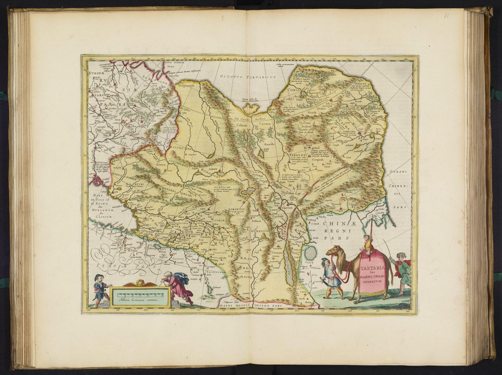

Tartaria sive Magni Chami Imperium

Machine transcription and translation (Claude Opus 5.5, 26 Nov 2026), not yet reviewed by a specialist. [?] marks an uncertain reading. The text on the back was compared with the project's transcription of another copy; the texts on the map have not been checked yet.
Willem Janszoon Blaeu's map of Tartary, from his Latin atlas (Amsterdam, 1634). It runs from Muscovy and the Caspian to the China Sea, with a camel carrying the title, and notes on Gog and Magog, the Christian kingdom of Tenduc in Marco Polo's day, the tombs of the Tartar kings on Mount Alchai, Cambalu, the rhubarb of Tangut, the illusions of the desert of Lop and the Great Wall. An AI model, Claude Opus 5.5, read the map from the David Rumsey Map Collection copy without any reference text: 69 texts, notes and names, which can be read in the panel and the tour, and 386 place names, shown under “Towns, rivers and lakes” in the filter. Turn the sheet over for the atlas's description of Tartary, read by the same model from the Biblioteca Nacional de España copy, in passages that follow its printed margin notes. It was compared with the project's transcription of another copy.
TARTARIA sive MAGNI CHAMI IMPERIVM
Tartary, or the Empire of the Great Cham [Khan].
Show on the mapCzeremisse populi hic passim vagantes latrocinantur.
The Czeremisse peoples [Cheremis, i.e. Mari], wandering here and there, live by brigandage.
Show on the mapASTRACAN nomen habet ab opuletissima urbe Astracan anno 1554[?] a Iohanne Basiliwiche subacta, ac imperio Russio adjecta.
ASTRACAN takes its name from the very wealthy city of Astracan [Astrakhan], subdued in the year 1554[?] by Iohannes Basiliwich and added to the Russian empire.
Show on the mapKALMVCKI id est criniti Tartari
The Kalmucks, that is, the long-haired Tartars
Show on the mapMARE DE SALA vel DE BACHV, olim HYRCANVM, sive CASPIVM
The Sea of Sala or of Bachu [Baku], formerly the Hyrcanian or Caspian [Caspian Sea]
Show on the mapweygats Hollandis Fretum Nassovicum
Weygats, [called] by the Dutch the Strait of Nassau.
Show on the mapTazata insula, hic uspiam a Plinio ponitur
The island Tazata is placed somewhere here by Pliny.
Show on the mapCamenoi poyas, hoc est orbis terre cingulum mons hiperboreus veteribus
Camenoi poyas, that is, the girdle of the world; to the ancients, the Hyperborean mountain.
Show on the mapCare desertum per quod in Chathaium eunt ac redeunt Tartari.
Care, a desert through which the Tartars go to Chathaium [Cathay] and come back.
Show on the mapKARAKITAY, id est nigra Kithaya
Karakitay, that is, black Kithaya [Qara Khitai]
Show on the mapSamarchand magni Tamberlanis regia
Samarchand [Samarkand], royal seat of the great Tamberlane [Timur].
Show on the mapMAGNI MOGOLI IMPERII PARS
Part of the empire of the Great Mogul [Mughal Empire]
Show on the mapBARGV campestria, quorum incolæ vocantur Mecriti.
The plains of Bargu, whose inhabitants are called Mecriti.
Show on the mapTENDVC regnum in quo regnabant Christiani tempore Marci Pauli veneti anno 1290.
The kingdom of Tenduc, in which Christians reigned in the time of Marcus Paulus the Venetian [Marco Polo], in the year 1290.
Show on the mapVNG quæ a nostris Gog dicitur.
Ung, which by our people is called Gog.
Show on the mapMONGVL quæ a nostris magog dicitur,
Mongul, which by our people is called Magog.
Show on the mapAlchai mons in quo Regum Tartariæ, sepulchra sunt.
Mount Alchai, in which are the tombs of the kings of Tartary.
Show on the mapCastrum in quo præsidia collocarat Vutcham contra irruptionem Tartarorum.
A fortress in which Vutcham had placed garrisons against the incursion of the Tartars.
Show on the mapCianganor id est lacus Albus.
Cianganor, that is, the White Lake.
Show on the mapDesertum de Belgian magnum arenosum et sterile
The Desert of Belgian, large, sandy and barren.
Show on the mapCATHAYA Regnum Primarium magni Cam
Cathaya, the chief kingdom of the Great Cam [Khan].
Show on the mapCambalu cathaye metropolis habet 28. millia in circuitu.
Cambalu [Beijing], the metropolis of Cathay, is 28 miles in circumference.
Show on the mapCampion primaria Tanguthæ, vrbs cuius incolæ partim sunt Christiani partim Mahumetistæ
Campion, the chief [city] of Tanguth, a city whose inhabitants are partly Christians, partly Mahometans.
Show on the mapTANGVNT ex hoc regno omne Rhabarbarum ad Europeos deferri volunt
Tangunt. From this kingdom, they say, all the rhubarb is carried to the Europeans.
Show on the mapIn deserto Lop et Belgian homines miris illusionibus et diabolico screatu seduci creduntur
In the desert of Lop and Belgian, people are believed to be led astray by wondrous illusions and a devilish screatus [hawking or hissing noise; reading uncertain].
Show on the mapMurus quadringentarum leucarum inter montium crepidines a rege Chine contra Tartarorum ab hac parte eruptiones, extructus.
A wall of four hundred leagues, built between the foothills of the mountains by the king of China against the incursions of the Tartars from this side. [Great Wall of China]
Show on the map20 40 60 80 100 120 Milliaria Germanica communia
20, 40, 60, 80, 100, 120: common German miles
Show on the mapEVROPÆ PARS
Part of Europe
Show on the mapRVSSIÆ PARS
Part of Russia
Show on the mapNAGAIA HORDA
The Nagaia Horde [Nogai Horde]
Show on the mapPERSIÆ PARS
Part of Persia
Show on the mapNOVA ZEMBLÆ PARS
Part of Nova Zembla [Novaya Zemlya]
Show on the mapOCEANVS TARTARICVS
Tartar Ocean
Show on the mapSAMOIEDA
Samoieda [Samoyeds]
Show on the mapBAIDA
Baida
Show on the mapBARSCOL
Barscol
Show on the mapSub Circulo Arctico
Under the Arctic Circle
Show on the mapCavona
Show on the mapColmak
Show on the mapAnnibi
Show on the mapLICOMORYE
Licomorye
Show on the mapIOV.GHORIA
Iovghoria [Yugra]
Show on the mapKITHAISKO
Kithaisko
Show on the mapDesertum Dovisival
Desert of Dovisival
Show on the mapKASAKKI TARTARI
The Kasakki Tartars
Show on the mapZAGATAY Tartari[?]
The Zagatay Tartars [Chagatai]
Show on the mapTVRCH
Turch[estan?]
Show on the mapTaskent
Show on the mapMAVRENACHER
Mavrenacher [Transoxiana]
Show on the mapTVRCHESTAN
Turchestan [Turkestan]
Show on the mapSAFANIAN
Safanian
Show on the mapASRVSEN
Asrusen
Show on the mapMVXENTVS
Muxentus
Show on the mapOCRAGE
Ocrage
Show on the mapSIRISITVR
Sirisitur
Show on the mapBVCCARA
Buccara [Bukhara]
Show on the mapSIM
Sim
Show on the mapSACHI
Sachi
Show on the mapCIARCIAN
Ciarcian
Show on the mapGIECVM
Giecum
Show on the mapISTIGIAS
Istigias
Show on the mapSIMMAVREMAIER
Simmavremaier (as engraved; word division uncertain)
Show on the mapTACALISTAN
Tacalistan
Show on the mapTabin promontorium Plinio
The promontory Tabin, [so called] by Pliny.
Show on the mapCIORZA
Ciorza.
Show on the mapCARLI
Carli.
Show on the mapIdisa montes aurifere
The Idisa mountains, gold-bearing.
Show on the mapOCEANI CHINENSIS PARS
Part of the Chinese Ocean.
Show on the mapCHINÆ REGNI PARS
Part of the Kingdom of China.
Show on the mapTARTARIA.
Tartary.
Show on the mapTartaria per vastas Scythiæ solitudines ad Septentrionem porrectas extenditur. inhabitant eam Tartari, qui vitæ continentia et gentis suæ Scythicæ antiquitate gloriari solent, asseverantes se esse semen Abrahæ, et nemini servivisse unquam, licet vexati interdum bellis fuerint ab Alexandro, Dario, Cyro, Xerxe, aliisque regibus, et populis potentioribus. Præfuit illis olim unus Chanus, sive Dominus. Nunc plures scisso imperio dominantur. Nomen habet à fluvio Tartaro Tattar, qui à nostris Magog, ab accolis Mongul dicitur, à regione sita ad Septentrionem.
Tartaria extends through the vast wastes of Scythia that stretch out towards the North. It is inhabited by the Tartars, who are accustomed to pride themselves on the restraint of their way of life and on the antiquity of their Scythian nation, asserting that they are the seed of Abraham and have never been in servitude to anyone, although at times they were harassed in wars by Alexander, Darius, Cyrus, Xerxes and other kings, and by more powerful peoples. Formerly a single Chanus, or Lord, ruled over them. Now, the empire having been split, several hold sway. It has its name from the river Tartarus, Tattar, which by our people is called Magog and by the neighbouring inhabitants Mongul, from a region situated towards the North.
Show on the mapAb Ortu Chinarum habet regnum, à meridie Indiam, Gangem fluvium et Oxum, ab Occidente mare Caspium et Poloniam, inde Moscoviæ contermina est, à Septentrione vastis spatiis extenditur Mare glaciale.
On the East it has the kingdom of the Chinese; on the South, India, the river Ganges and the Oxus; on the West, the Caspian Sea and Poland; then it borders on Muscovy; on the North the Frozen Sea stretches over vast spaces.
Show on the mapPrimum ex Tartarorum gente Imperatorem nominant Changium, vel Chamum. Paulus Venetus Cinchin vocat, Filius huic fuit Iocucham, à quo tertius Imperator Zaincham, qui ab aliis Bathi dicitur. Quartus fuit Tenur[?] Cutlu, sive Tamberlanes, qui Bajazetum Turcarum Imperatorem aureis compedibus vinctum in cavea per Asiam traduxit. Quintus fuit Temir-Gzar[?], Sextus Macmetzcar, post hunc Armetzcar, et Siachmet, aliique.
As the first Emperor from the nation of the Tartars they name Changium, or Chamum [Genghis Khan]; Paulus Venetus [Marco Polo] calls him Cinchin. His son was Iocucham, after whom the third Emperor was Zaincham, who by others is called Bathi. The fourth was Tenur[?] Cutlu, or Tamberlanes [Timur], who led Bajazetum [Bayezid I], Emperor of the Turks, bound in golden fetters, in a cage through Asia. The fifth was Temir-Gzar[?], the sixth Macmetzcar, after him Armetzcar and Siachmet, and others.
Show on the mapGens ipsa ferox, atrox, cruenta, inconditis moribus, et omnium barbarorum maxime barbara Regio, plurimum inculta, tristis, squallida et deserta.
The nation itself is fierce, savage, bloodthirsty, of uncouth manners, and the most barbarous of all barbarians; the region is for the most part uncultivated, gloomy, squalid and deserted.
Show on the mapReligio seu lex est communis Tartaris cum Turcis, atque aliis Saracenis, quæ Iudaismum olet et hæresin quandam Nestorianam. Deum unum profitentur. Christum vero sanctum Prophetam et Iudicem mundi postremum, virgine pura natum, sed non verè passum credunt. Circumcisionem observant, sed eam jam adulta ætate suscipiunt, qua Ismael patriarcha illorum circumcisus erat. Orta hæc secta creditur in Mecha oppido Arabiæ, anno salutis 600, machinatione cujusdam Sergii monachi et apostatæ nefandi. Religionem suam conatu propagant.
Their religion, or law, is common to the Tartars with the Turks and other Saracens, and it smacks of Judaism and of a certain Nestorian heresy. They profess one God. Christ, however, they believe to be a holy Prophet and the last Judge of the world, born of a pure virgin, but not truly to have suffered. They observe circumcision, but undergo it only at a grown age, the age at which Ismael, their patriarch, had been circumcised. This sect is believed to have arisen in Mecha [Mecca], a town of Arabia, in the year of salvation 600, through the scheming of a certain Sergius, a monk and an abominable apostate. They spread their religion with zeal.
Show on the mapDiem à precatione auspicantur, et precibus finiunt. quotidie, mane, vesperi, et pomeridianis horis orant: nulla, quo id minus agant, necessitate avocari se sinunt. non id opus in solos Sacerdotes rejiciunt, etsi illos solos à precatione et lege interpretanda habent. quilibet pro se tam clericus quam laicus pariter, et clam et coram hominibus turmatim in cœtibus Deum confitentur. Semper sobrii, aqua lustrali membra loti, terram, in qua cum Deo loquuntur, imitati sacram scripturam, pro sancta ducunt, et insternunt. Nullis sedilibus in fanis utuntur. characteres præscriptos, et certos gestus adhibent, palmas ad cœlum expandunt, genua flectunt, incurvantes et usque in terram proni in faciem procidunt, toto corde et omnibus membris orationi incumbunt, in qua non valde multa verba repetunt, sed hæc præcipua: Soli Deo immortali Creatori cœli et terræ, præter quem non est alius, honor et gloria in sæcula sæculorum.
They begin the day with prayer and end it with prayers. Daily, in the morning, in the evening and in the afternoon hours, they pray; they allow themselves to be called away by no necessity that would make them do this less. They do not throw this task onto the priests alone, although they keep these solely for prayer and for interpreting the law. Each one for himself, cleric and layman alike, both privately and before men, in crowds and in assemblies, confesses God. Always sober, their limbs washed with lustral water, they hold as holy the ground on which they speak with God, in imitation of sacred scripture, and they cover it over. They use no seats in their shrines. They employ prescribed characters and fixed gestures, spread their palms towards heaven, bend their knees, and, bowing down, fall prone on their faces right to the ground; with their whole heart and all their limbs they give themselves to prayer, in which they repeat not very many words, but chiefly these: To God alone, immortal, Creator of heaven and earth, besides whom there is no other, be honour and glory for ever and ever.
Show on the mapPrecationi adjungunt jejunium. affligunt enim totos dies animas suas non solum fame et siti, sed ab omni opere et verbis profanis abstinentes, nihil præter divina curantes usque ad intempestam noctem, capientes cibum non ad luxuriam, sed ad virium refectionem. Rident jejunia nostra, non fame, non siti, non cinere, non rerum divinarum contemplatione, non vigiliis, non orationibus condita. Sunt et in eleemosynis dandis liberales. neminem enim suorum unquam mendicari, aut fame vel algore perire patiuntur. Adhibent tamen in hac beneficentia judicium. nam non dant iis, qui eleemosynam in ingluviem et luxum convertant. sed pauperibus, debilibus, peregrinis, scholasticis, literis et ritibus religionis ipsorum cognoscendæ studentibus. Arcana divina scrutari nefas prophanumque esse existimant, nostram temeritatem execrantes, quod quidam ex nobis de judiciis et secretis divinis, quæ magna abyssus vocantur, in suis comessationibus disputent, nomen divinum frustra usurpent. Irrident Tartari nostros Ecclesiastas seu prophetas, taxant templa supellectilis, sedilium, ararum, simulacrorum, et Dei ad senectutem vergentis, et mulierum venustarum plena. Nos æris pulsu, illi certis laudis divinæ verbis ac vociferationibus ad templa se invitant: nos, quod in laudibus divinis aures delectemus nostras, buccinis, organis, harmoniis, verba precationis obscurantibus, et organis interea nostris naturalibus silentibus, reprehendunt.
To prayer they join fasting. For they afflict their souls for whole days not only with hunger and thirst, but also abstaining from all work and from profane words, caring for nothing but divine things until the dead of night, taking food not for luxury but for restoring their strength. They laugh at our fasts, which are seasoned not with hunger, not with thirst, not with ashes, not with contemplation of divine things, not with vigils, not with prayers. They are also generous in giving alms; for they never allow any of their own people to beg, or to perish of hunger or cold. Yet they use judgement in this beneficence: for they do not give to those who would turn alms to gluttony and luxury, but to the poor, the infirm, strangers, and scholars devoted to learning the letters and rites of their religion. They consider it wicked and profane to pry into the divine mysteries, cursing our rashness, in that some of us dispute at their drinking-bouts about the divine judgements and secrets, which are called a great abyss, and take the divine name in vain. The Tartars mock our Ecclesiastics, or prophets; they censure our churches, full of furnishings, of seats, of altars, of images, of a God verging on old age, and of comely women. We by the striking of bronze, they by fixed words of divine praise and by loud cries, summon themselves to the temples. Us they reproach because in the divine praises we delight our ears with trumpets, organs and harmonies, which obscure the words of prayer, while our natural organs meanwhile are silent.
Show on the mapTartari in equitatu sunt assidui, absque curribus bella gerunt, equis peregrinis abundant, urbibus quas tutentur carent. Moschi quolibet Vere ex Orda Tartarica Nohaiensi, permutatione vestium, et rerum aliarum vilium, multa millia equorum bello aptissimorum accipiunt. Tartari equorum ditissimi, ne Principis quidem suæ vehiculo jungi patiuntur equum. Tartari tunicas habent absque plicis et rugis longas, equitanti dimicantique commodas; pileos albos, leves et acutos non ad fastum paratos, quorum eminentia atque nitore in agminibus, licet minime galeati esse soleant, apparent illustriores et hostibus formidandi. Aromatis adeo abstinent, ut et in epulis paschalibus contenti sint his condimentis, sale lutulento, sinapi, allio, cæpis, suæque tulluris fructibus, non solum vulgus, verum etiam optimates, et summus dux illorum, arcium nostrarum ereptor, quas jam LXXIII[?] enumerat jactanter. In mensa Principis convivali, inter aurea vasa et vernacuculas dapes, nonnihil quidem piperis, non tamen cocti, in trullis seorsim apponitur, sed à nemine attingitur. Tartari Præcopenses itidem aromata aversantur, vivuntque potu lactis et aquæ putealis, quæ in ambitu Tauricæ campestri, raro invenitur quam amara, clara autem rarius, nisi in visceribus terræ profundissime quæsita.
The Tartars are constantly on horseback; they wage war without chariots, abound in foreign horses, and lack cities to defend. Every Spring the Moschi [Muscovites] receive from the Nohaiensian Tartar Horde [the Nogai], in exchange for clothing and other cheap goods, many thousands of horses most fit for war. The Tartars, though exceedingly rich in horses, do not allow a horse to be yoked even to their Prince's carriage. The Tartars have long tunics without pleats or folds, convenient for riding and fighting; white caps, light and pointed, made not for show, through whose height and brightness in their columns, although they are usually not at all helmeted, they appear more conspicuous and formidable to the enemy. They abstain from spices to such a degree that even at their Easter feasts they are content with these seasonings: muddy salt, mustard, garlic, onions and the fruits of their own earth; not only the common people, but also the nobles, and their supreme leader, the snatcher of our fortresses, of which he now boastfully counts LXXIII[?]. At the Prince's banquet table, among golden vessels and native dishes, some pepper is indeed set out separately in ladles, though not cooked, but it is touched by no one. The Præcopensian Tartars likewise shun spices, and live on a drink of milk and of well-water, which in the open, flat country of Taurica is rarely found other than bitter, and clear still more rarely, unless sought very deep in the bowels of the earth.
Show on the mapApud Tartaros qui modo vinum gustaverit, is et octoginta fustuariis ictibus percutitur, et totidem nummis mulctatur. Tartari suas mulieres in abditis semper tenent locis. Sequuti ducem naturam, atque priscorum hominum, de quibus in Bibliis, consuetudinem, plures simul singuli uxores habent. Ex quibus numerosas filiorum et affinium copias consequuntur. Et uxores quanto plures, tanto sui amantiores habent, faustisque fruuntur matrimoniis. Nec sponsarum magnas dotes quærunt, nec formas nec inclytas familias; adeo ut summi principes ex captivis emptitiis conjuges sumant. Nec ita pridem in copiis Oslam Soltan fuere collectanei ejus, cujusdam Omeldesz XL filii simul, robusti, uno anno et mense fortassis ex uxoribus et pellicibus ejus procreati, quæ cohors XL fratrum conspicua fuit, et hic apud fluvium Vaka villa Tartarorum frequens est, antiquitus XL Tartarorum, id est, fratrum, appellata. Mercandarum sponsarum morem, qui est apud Tartaros, patet fuisse etiam apud Israëlitas, Genes. 29. et 1 Reg. 18. quemadmodum et in nostra olim gente solvebatur parentibus pro sponsis pretium, quod krieno à Samagitis vocatur.
Among the Tartars, whoever has merely tasted wine is both beaten with eighty blows of the cudgel and fined as many coins. The Tartars always keep their women in hidden places. Following nature as their guide, and the custom of the men of old of whom [we read] in the Bible, each of them has several wives at once. From these they obtain numerous throngs of sons and kinsmen. And the more wives they have, the more loving of themselves they find them, and they enjoy happy marriages. Nor do they seek large dowries of their brides, nor beauty, nor illustrious families; so much so that the highest princes take their wives from among purchased captives. Not long ago, in the forces of Oslam Soltan, there were among his companions XL [forty] sons of a certain Omeldesz together, sturdy men, begotten perhaps in one year and month by his wives and concubines; this cohort of XL brothers was conspicuous, and here by the river Vaka there is a populous village of the Tartars, anciently called 'of the XL Tartars', that is, 'of the brothers'. It is plain that the custom of buying brides, which exists among the Tartars, existed also among the Israelites, Genesis 29 and 1 Kings [1 Samuel] 18, just as among our own nation too a price was formerly paid to the parents for brides, which is called krieno by the Samagitians [Samogitians].
Show on the mapDividitur Tartaria omnis in Europæam et Asiaticam.
Tartaria as a whole is divided into European and Asiatic.
Show on the mapEuropæa est Tartaria Minor, sive Præcopensium Tartarorum regnum, pars Scythiæ Europææ, quæ fluviis Borysthene et Psola ac Desna (quæ duo in Borysthenen exeunt) et Tanai minori, vulgo Donetz, ipsoque Tanai, Mœotide Palude ac Ponto cingitur. Omne littus hujus tractus Græcorum coloniis juxta ac monumentis inclytum fuit, maxime vero Taurica Chersonesus, non minus quam ipsa Græcia celebrata. In hac Græcorum urbes claræ, Panticapæum, nunc vulgo Pontico: Cimmerium, in medio Chersonesi; Taphros, nunc Przekop, et Theodosia, nunc Kaffa. Scythæ in universum tenuerunt: at postquam Tartari ex Asia profecti occuparunt, Tartaria dicta est; minorque cognominata, ad differentiam Majoris quæ est in Asia. Dividitur hæc in Præcopensem et Cremeam. Præcopensis, quæ Sarmatis Przicopska dicitur, est ipsa Chersonesus Taurica, à Przekop, id est fossa, quæ ab Isthmo facta est, seu ab oppido ejusdem nominis huic apposito, cognominata. Cremea, Krymska incolis, est reliqua pars extra Chersonesum; à Krym oppido, quod olim Cremnos dicta. At quia imperii sedes est in Chersoneso, tota Tartaria Minor Præcopensium regnum appellatur. Ipsa gens fera, atrox et rapida, non in oppidis vel civitatibus, sed campis ac silvis vaga agit. Vnius regis imperio parent, cujus regia est Przekop.
The European is Tartaria Minor, or the kingdom of the Præcopensian Tartars, a part of European Scythia, which is bounded by the rivers Borysthenes [Dnieper], Psola and Desna (which two flow out into the Borysthenes), and by the lesser Tanais, commonly the Donetz, and the Tanais [Don] itself, the Mæotic Marsh [Sea of Azov] and the Pontus [Black Sea]. The whole coast of this tract was renowned for the colonies as well as the monuments of the Greeks, and above all the Tauric Chersonese [Crimea], celebrated no less than Greece itself. In it were famous cities of the Greeks: Panticapæum, now commonly Pontico; Cimmerium, in the middle of the Chersonese; Taphros, now Przekop [Perekop]; and Theodosia, now Kaffa [Feodosia]. The Scythians held it as a whole; but after the Tartars, setting out from Asia, occupied it, it was called Tartaria, and was surnamed the Lesser, to distinguish it from the Greater, which is in Asia. This is divided into the Præcopensian and the Cremean. The Præcopensian, which is called Przicopska by the Sarmatians, is the Tauric Chersonese itself, named after Przekop, that is, the ditch, which was made from the Isthmus, or after the town of the same name placed beside it. Cremea, Krymska to its inhabitants, is the remaining part outside the Chersonese; [named] after the town of Krym, which was formerly called Cremnos. But because the seat of government is in the Chersonese, the whole of Tartaria Minor is called the kingdom of the Præcopensians. The nation itself, wild, savage and swift, lives a wandering life not in towns or cities but in the plains and forests. They obey the rule of one king, whose royal seat is Przekop.
Show on the mapAsiatica quinque potissimum partibus distribuitur, quarum nomina hæc; Tartaria Deserta, Tartaria Zagataja, Turchestan regnum, Cantaini Magni Imperatoris imperium, et Tartaria Vetus.
The Asiatic is divided chiefly into five parts, whose names are these: Tartaria Deserta, Tartaria Zagataja, the kingdom of Turchestan, the empire of the Cantaini Great Emperor, and Tartaria Vetus.
Show on the mapDeserta Tartaria inter Tanaim, Volgam, Iaxartem amnes, Tapyros, Sebyos, Imaumque montes sita Sarmatiæ Asiaticæ partem, partemque maximam Scythiæ intra Imaum montem complectitur, in Hordas complures distributa. quarum præcipuæ sunt: Zavolhensis, quæ et Bulgarorum Tartarorum est horda; Casanensis, Nohaigensis, Tumensis, Schibanskensis, Cosakensis, Astracanensis, quæ quondam peculiare regnum, et Baskirdensis; pleræque ab oppidis cognominatæ. Harum incolæ, cum omnes liberi ante essent, nunc Moscovitarum imperio audientes sunt; exceptis unis Tumensibus, qui magno Chano Cataino parent.
Tartaria Deserta, situated between the rivers Tanais, Volga and Iaxartes [Syr Darya] and the mountains Tapyri, Sebyi and Imaus, comprises part of Asiatic Sarmatia and the greatest part of Scythia within Mount Imaus, and is divided into a number of Hordes, of which the chief are: the Zavolhensis, which is also the horde of the Bulgar Tartars; the Casanensis, Nohaigensis, Tumensis, Schibanskensis, Cosakensis; the Astracanensis, which was once a kingdom of its own; and the Baskirdensis; most of them named after towns. Their inhabitants, although formerly all were free, are now obedient to the rule of the Muscovites, except only the Tumenses, who obey the great Cataian Chan.
Show on the mapZavolhensis horda magna quondam dicebatur, quia ex hac ceteræ ortum duxerant; unde etiam Imperator eorum Vluchan appellabatur, id est, Magnus Dominus sive Magnus Imperator. Astracanensis regni caput est urbs Astracan sive Citrachan prope ostia Volgæ, salinis atque emporio clara. qua de causa mercatores innumeri ex Moscovia, Turcico Imperio, Armeniis et Perside eo confluunt. Sunt præterea in Deserta Tartaria Czyrkassi, inter Tanaim et Volgam, in Asiatica Sarmatia: et versus Oceanum in Scythia intra Imaum, Mecriti ac Samejedi, quos latine dicas semetipsos devorantes; aliique eodem tractu, Molgomsai, Badaique; utrique solem, vel rubrum pannum in sublime elatum, venerantes. Ceterum dexteræ Obii ripæ, circa mediam fluminis partem, apposita est urbs magnitudine et incolarum numerositate ingens Grustina, Tartaris et Moscovitis negotiatoribus frequentissimum emporium.
The Zavolhensis horde was once called the Great [Horde], because the others had taken their origin from it; whence also their Emperor was called Vluchan, that is, Great Lord or Great Emperor. The capital of the Astracanensian kingdom is the city of Astracan or Citrachan [Astrakhan], near the mouths of the Volga, famous for its salt-works and its market; for which reason countless merchants flock there from Muscovy, the Turkish Empire, the Armenias and Persia. There are, moreover, in Tartaria Deserta the Czyrkassi [Circassians], between the Tanais and the Volga, in Asiatic Sarmatia; and towards the Ocean, in Scythia within Imaus, the Mecriti and the Samejedi [Samoyeds], whom you might call in Latin 'self-devourers'; and others in the same tract, the Molgomsai and the Badai; both worshipping the sun, or a red cloth raised on high. Moreover, on the right bank of the Obius [Ob], about the middle part of the river, lies a city vast in size and in the number of its inhabitants, Grustina, a market very much frequented by Tartar and Muscovite traders.
Show on the mapDesertæ Tartariæ à meridie conjuncti sunt Tartari Zagatai, agro, opidis moribusque cæteris cultiores ac nobiliores. Fines eorum à Septemtrione Iaxartes flumen; ab ortu Turkestan regnum; à meridie Persicum imperium; ab occasu mare Hyrcanum. Caput regionis ac sedes regum est Samarcanda, Tamberlane bellicosissimo Tartarorum Imperatore maxime celebris; urbs magna ac lapide exstructa; at parum frequens. Zahaspa ad Oxi ostia et Bikent in mediterraneis clara sunt emporia, quo Indi et Catajæ regni incolæ mercandi causa conveniunt.
Joined to Tartaria Deserta on the south are the Zagatai Tartars, more cultivated and nobler than the rest in their land, towns and manners. Their boundaries are: on the North the river Iaxartes; on the East the kingdom of Turkestan; on the South the Persian empire; on the West the Hyrcanian Sea [Caspian Sea]. The capital of the region and seat of the kings is Samarcanda [Samarkand], most celebrated for Tamberlanes, the most warlike Emperor of the Tartars; a large city, and built of stone, but little frequented. Zahaspa at the mouths of the Oxus [Amu Darya], and Bikent in the interior, are famous markets, where Indians and the inhabitants of the kingdom of Cataja [Cathay] gather for the sake of trade.
Show on the mapProximum ab ortu est Turkestan regnum, veterum Sacarum regio; cujus incolæ satis civiles et culti. Vrbium notissimæ, Taskent, Cotam, Cascar, Iarkem.
Next to it on the east is the kingdom of Turkestan, the region of the ancient Sacae, whose inhabitants are fairly civilised and cultivated. The best known of its cities are Taskent, Cotam, Cascar, Iarkem.
Show on the mapPotentissimum inter Tartaros imperium est Magni Chani in regnis Cataja, Tangut, Tainfu: et in provinciis Tenduc, Camul, Ciarciam, Carakitay, id est Nigra Cataja, et Teber. Initium ejus est à Norussis montibus in finibus Tartariæ desertæ, extenditurque ad Tabin usque promontorium et fretum Anian longitudine LX[?] circiter milliaria Germanica. Occupat veterem Sericam, majorem partem Scythiæ extra Imaum montem, partemque Scythiæ intra Imaum.
The most powerful empire among the Tartars is that of the Great Chan, in the kingdoms of Cataja, Tangut and Tainfu, and in the provinces of Tenduc, Camul, Ciarciam, Carakitay, that is, Black Cataja, and Teber. It begins at the Norussian mountains on the borders of Tartaria Deserta, and extends as far as the promontory of Tabin and the Strait of Anian, about LX[?] [sixty] German miles in length. It occupies ancient Serica, the greater part of Scythia beyond Mount Imaus, and part of Scythia within Imaus.
Show on the mapSerica est ipsum nunc regnum Catajæ, vulgo Kitay;[?] incolis (ut ferunt) adeo frequens, et agrorum cultu adeo læta, urbiumque splendore, ædificiorum nitore, atque omni denique divitiarum genere adeo affluens, uti neque Græciæ veteri neque Italiæ cedat. Vrbium opulentissima est Cambalu, regia sedes et caput totius Imperii Magni Chani, quinque milliaria Germanica ambitu comprehendens; quam duodecim suburbia, juxta numerum portarum, circumjacent, frequentissimum Indis ac[?] Senensibus mercatoribus emporium. Caindu urbs velis subtilissimis, quæ ex arborum corticibus ad usum fœminarum conficiunt, maxime est clara. Quare tela olim Serica nota erat. Vnde Plinius; Seres, inquit, lanificio nobiles, perfusam aqua depectentes frondium canitiem. In regno Tangut artem typographicam ante CIↃ annos inventam fuisse, nonnulli contendunt. Tenduc provincia, magni et potentis Regis Presbyteri Joannis (quod nomen postea Abyssinorum Regi in Africa per errorem datum fuit) quondam regnum fuit. Tainfu regnum amplum atque cultum vitibusque fertile, artificibus ac negotiatoribus refertum, armorum bellicorum nobilissima inter Tartaros officina. Quin Serico ferro jam inde Plinius palmam tribuit.
Serica is now the kingdom of Cataja itself, commonly Kitay; so thronged with inhabitants (as they say), so flourishing in the cultivation of its fields, and so abounding in the splendour of its cities, the elegance of its buildings and, in short, every kind of wealth, that it yields neither to ancient Greece nor to Italy. The wealthiest of its cities is Cambalu [Khanbaliq, Beijing], the royal seat and capital of the whole Empire of the Great Chan, five German miles in circuit; twelve suburbs, matching the number of its gates, lie around it; it is a market very much frequented by Indian and[?] Senensian merchants. The city of Caindu is especially famous for very fine veils, which they make from the bark of trees for the use of women. For this reason Serican cloth was formerly well known. Hence Pliny: 'The Seres', he says, 'famous for their wool-work, combing off the white down of the leaves, steeped in water.' Some maintain that the art of printing was invented in the kingdom of Tangut CIↃ [1000] years ago. The province of Tenduc was once the kingdom of the great and powerful King Presbyter Joannes [Prester John] (a name which was afterwards given by mistake to the King of the Abyssinians in Africa). Tainfu is a kingdom large and cultivated and fertile in vines, crowded with craftsmen and traders, the most renowned workshop of weapons of war among the Tartars. Indeed, already in his day Pliny awarded the palm to Serican iron.
Show on the mapPostrema universæ Tartariæ pars est Vetus Tartaria, inter Paropamisum amnem et Sericam sive Catajæ regnum, ad usque Septentrionalem Oceanum et fretum Anian extensa. Dicitur Vetus Tartaria, quia hinc primo nomen Tartarorum, ut supra demonstravimus, exortum est. Regiones hic et hordæ complures, quarum nomina vix nota aut certa. At Vng et Mongul regiones, Gog, et Magog esse, viri docti docent.
The last part of all Tartaria is Old Tartaria [Vetus Tartaria], stretching between the river Paropamisus and Serica, or the kingdom of Cataja, as far as the Northern Ocean and the Strait of Anian. It is called Old Tartaria because the name of the Tartars first arose from here, as we have shown above. There are many regions and hordes here, whose names are scarcely known or certain. But learned men teach that the regions of Vng and Mongul are Gog and Magog.
Show on the map| On the map | Reading |
|---|---|
| Tuia | Tuia |
| Pleßa | Plessa |
| Bachanti | Bachanti |
| Muran | Muran |
| Surick | Surick |
| Iaroslaw | Iaroslaw [Yaroslavl] |
| Caßima No: | vogrot | Cassima Novogrot |
| Wolga et Edil ol: | Rha fluv. | Wolga and Edil, formerly the Rha river [Volga] |
| wologda | Wologda [Vologda] |
| Sernsar | Sernsar |
| Nißi Novo: | grot | Nissi Novogrot [Nizhny Novgorod] |
| Castroma | Castroma [Kostroma] |
| Bieleie: | ziero | Bieleieziero [Beloye Ozero] |
| Bexima | Bexima |
| Masdarõ | Masdaron |
| Taon | Taon |
| waßilgo | rod | Wassilgorod |
| Iorgowitz | Iorgowitz |
| Meshet | Meshet |
| Shabochshar | Shabochshar |
| Abitorye fl. | Abitorye river |
| Suchana flu. | Suchana river [Sukhona] |
| Balagna | Balagna |
| Cosmay | Cosmay |
| Iᵃˢ de Podoßemske | Ias de Podossemske |
| Chain | Chain |
| S. Michiel Archangel | St Michael Archangel [Arkhangelsk] |
| Saraitsick | Saraitsick |
| Chimis | Chimis |
| Iemsa | Iemsa |
| Shenskora | Shenskora |
| Brousensko | Brousensko |
| Kolmogori | Kolmogori [Kholmogory] |
| Totma | Totma |
| Mulchonder | Mulchonder |
| Swiatzko | Swiatzko |
| Bulgaria | Bulgaria [Volga Bulgaria] |
| Salicinit[?] | Salicinit |
| Wolga flu. | Wolga river [Volga] |
| Dsina | Dsina |
| Vstiug emporium | Vstiug, trading town [Veliky Ustyug] |
| Mesandaran | Mesandaran [Mazandaran] |
| Onsthea | Onsthea |
| Czochloma | Czochloma |
| Sebruin | Sebruin |
| Mazuson | Mazuson |
| Bobrovesco | Bobrovesco |
| Risan | Risan |
| Mozadares | Mozadares |
| Dsina fl. al: Dwina flu. | Dsina river, also Dwina river [Northern Dvina] |
| Samar flu: | Samar river [Samara] |
| Cotelnicz | Cotelnicz [Kotelnich] |
| Cazan | Cazan [Kazan] |
| Melmemesuach | Melmemesuach |
| Taclisuliman | Taclisuliman |
| Shakaskik | Shakaskik |
| Chepcen | Chepcen |
| Irmonech | Irmonech |
| Slohoda | Slohoda |
| Starabat | Starabat [Astarabad] |
| Strelna | Strelna |
| Andicaton | Andicaton |
| Ravore | Ravore |
| Lampas | Lampas |
| Pasch | Pasch |
| Pirichenar | Pirichenar |
| Strelze | Strelze |
| Rhymnici montes | Rhymnici mountains |
| Kowloa | Kowloa |
| Yaick olim Rhymnus flu. | Yaick, formerly the Rhymnus river [Ural] |
| Nios flu. | Nios river |
| Nisabui | Nisabui |
| Iorman | Iorman |
| Canabusi | Canabusi |
| Fortona | Fortona |
| Frutach | Frutach |
| Teus fl. | Teus river |
| Orlo | Orlo |
| Voichogda flu. | Voichogda river [Vychegda] |
| Kama flu. | Kama river |
| Marmor | Marmor |
| Sebsoar | Sebsoar |
| Rheczicza flu: | Rheczicza river |
| Abescum | Abescum |
| Mezen | Mezen |
| Mazuson | Mazuson |
| Nimerdon | Nimerdon |
| Chilinova | Chilinova |
| Cotelnitz | Cotelnitz |
| Mansue | Mansue |
| Laicubi flu. | Laicubi river |
| Perme | velik | Perme velik |
| Cheche | Cheche |
| Mezena flu. | Mezena river [Mezen] |
| Cochinaco | Cochinaco |
| Pascharti | Pascharti |
| Masavis | Masavis |
| Chelidar | Chelidar |
| Chaschaer | Chaschaer |
| Audmirchenleldir | Audmirchenleldir |
| Kosar flu. | Kosar river |
| viatka f. | Viatka river [Vyatka] |
| Pagansa | Pagansa |
| Girgian | Girgian |
| Caracus | Caracus |
| witzechda flu. | Witzechda river |
| Calitagia flu. | Calitagia river |
| Sarax | Sarax |
| Zahaßpa | Zahasspa |
| Centaz | Centaz |
| Lere | Lere |
| Vahulicz[?] | Vahulicz |
| Mora | Mora |
| Caraßat | Carassat |
| vischora flu. | Vischora river |
| Madrandan[?] | Madrandan |
| Sagatin | Sagatin |
| Davasi | Davasi |
| Albiamu olim oxus flu. | Albiamu, formerly the Oxus river [Amu Darya] |
| Bachara | Bachara |
| Almorgab flu. | Almorgab river |
| Deristan | Deristan |
| Petzora flu. | Petzora river [Pechora] |
| Medrendani | Medrendani |
| weliki | Tumen | Weliki Tumen |
| Maru | Maru |
| Shaysure | Shaysure |
| Petzora | Petzora [Pechora] |
| Stzuchog ora fl. | Stzuchogora river |
| Organci | Organci |
| Eschinaru | Eschinaru |
| Sarachiuch | Sarachiuch |
| Germop | Germop |
| Kondori | Kondori |
| Pitzora | Pitzora |
| weliki | Perm | Weliki Perm |
| Corus | Corus |
| Irtische flu. | Irtische river [Irtysh] |
| Corsum | Corsum |
| Chesel fl. olim Laxartes | Chesel river, formerly the Laxartes [Syr Darya] |
| Noroßus mons | Mount Norossus |
| Strupilicas | Strupilicas |
| Lachozibet | Lachozibet |
| Lepin | Lepin |
| Ardoc flu. | Ardoc river |
| Tumen | Tumen |
| Siminan | Siminan |
| Saluna | lacus | Lake Saluna |
| Cant | Cant |
| Bigul | Desertum | Bigul desert |
| Faraue | Faraue |
| Babacabẽr[?] | lacus | Lake Babacaber |
| Cameni | Cameni |
| Chiargan | Chiargan |
| welliki Poyaßa | Welliki Poyassa |
| Amu | lacus | Lake Amu |
| Amu fl. | Amu river |
| Varcand | Varcand |
| oby fluvius | Oby river [Ob] |
| Beichet | Beichet |
| Ierom | Ierom |
| Ocerra | Ocerra |
| Chesolitis | Chesolitis |
| Bichend | Bichend |
| Ches | Ches |
| Giend | Giend |
| Obdora | Obdora |
| Staten Eylant | States Island |
| Bigul | Bigul |
| Sibier | Sibier |
| Albia flu. | Albia river |
| Teras | Teras |
| Tanais | Tanais |
| Sebgu | Sebgu |
| Chesumi | Chesumi |
| Diamuch | Diamuch |
| Calami | Calami |
| Ariandar | Ariandar |
| Eillach | Eillach |
| Sochas flu. | Sochas river |
| Merglan | Merglan |
| Feras | Feras |
| Obea Castrum | Obea fort |
| Coman | Coman |
| Esrusma | Esrusma |
| Erbigien | Erbigien |
| Agrian | disan | Agriandisan |
| Molgomzaia | Molgomzaia |
| Caracol | Caracol |
| Sabat | Sabat |
| Expanichies | Expanichies |
| Naseph | Naseph |
| Coßin fluvius | Cossin river |
| Espunuches | Espunuches |
| Istigias | Istigias |
| Serponow | Serponow |
| Margus flu. | Margus river |
| Teras | Teras |
| Tascan | Tascan |
| Cheng | Cheng |
| Badaglan | Badaglan |
| Parasan | Parasan |
| Chind | Chind |
| Sachi | Sachi |
| Benohes | Benohes |
| Gruslina | Gruslina |
| Anachon | Anachon |
| Eerber[?] | Eerber |
| Termend | Termend |
| Tapuri montes | Tapuri mountains |
| Samahin | Samahin |
| Samachsir | Samachsir |
| Etairan | Etairan |
| Reuen | Reuen |
| Selg | Selg |
| Auaclon | Auaclon |
| Cax | Cax |
| Vergut | Vergut |
| Tersis | Tersis |
| Sosechi | Sosechi |
| Cheregan | Cheregan |
| Achsiges | Achsiges |
| Sicby Montes | Sicby mountains |
| Ferment | Ferment |
| Vachzizatlan | Vachzizatlan |
| Tanchit | Tanchit |
| Albię fons | Source of the Albia |
| Caßima fluvius | Cassima river |
| Tinchit | Tinchit |
| Gerin | Gerin |
| Targana | Targana |
| Anarei Montes | Anarei mountains |
| Saun | Saun |
| Sermengan | Sermengan |
| Etaican | Etaican |
| Cumbalich | Cumbalich |
| Mugu | Mugu |
| Tagarnistan | Tagarnistan |
| Vesgirt | Vesgirt |
| Xibuar | Xibuar |
| Escalcand | Escalcand |
| Iarchen | Iarchen |
| Tachmin fluvius | Tachmin river |
| Sachania | Sachania |
| Calba | Calba |
| Mogalachs u[?] | Mogalachsu |
| Asarcst | Asarcst |
| Dalanguer M. | Mount Dalanguer |
| Cascar | Cascar [Kashgar] |
| Velualing | Velualing |
| Acsu | Acsu [Aksu] |
| Ciarcian | Ciarcian |
| Chuche | Chuche |
| Cotan | Cotan |
| Poin | Poin |
| Lop | Lop |
| Naugracot Mons | Mount Naugracot |
| Lahor | Lahor |
| Oby fluvius | Oby river [Ob] |
| Emil | Emil |
| Caradris flu. | Caradris river |
| Imaus Mons | Mount Imaus |
| Candatay | Candatay |
| Andegen | Andegen |
| Boratay | Boratay |
| Kithay lacus | Lake Kithay |
| C. Tamasi | C. Tamasi |
| Aczu | Aczu |
| Sur flu. | Sur river |
| Ganges flu. | Ganges river |
| Beperz fl. | Beperz river |
| Tasken | t | Taskent |
| Raosa | Raosa |
| Annibi Montes | Annibi Mountains |
| Turris la | pidea | mons | Stone Tower mountain |
| Cuchia | Cuchia |
| Cogricamri | Cogricamri |
| Samarc | ham | Samarcham |
| Punpan | Punpan |
| Cotam | Cotam |
| Mechenderi | Mechenderi |
| Carchã[?] | Carcham |
| Hontu | Hontu |
| Carazan | Carazan |
| Vociam | Vociam |
| Peim | Peim |
| Pinegle | Pinegle |
| Oechardus[?] flu. | Oechardus River |
| Sazechiam | Sazechiam |
| Penbi | Penbi |
| Hoquaij | Hoquaij |
| Koem | Koem |
| Quentin | Quentin |
| Turfon | Turfon |
| Hocheu | Hocheu |
| Teriam | Teriam |
| Hocy | Hocy |
| Cheto | Cheto |
| Ciartim[?] | Ciartim |
| Ciartiam | Ciartiam |
| Lacus Cincui Hay | Lake Cincui Hay |
| Lop | Lop |
| Desertum Lop | Desert of Lop |
| Camul | Camul |
| Tupchu[?] | Tupchu |
| Hosychioy[?] | Hosychioy |
| Tayhancosi | Tayhancosi |
| Imtusi | Imtusi |
| Quitu | Quitu |
| Tanhacezuu[?] | Tanhacezuu |
| Canaquieu | Canaquieu |
| Taitonfu | Taitonfu |
| Taingin | Taingin |
| Veuhiu[?] | Veuhiu |
| Palialiu[?] | Palialiu |
| Lanchiou | Lanchiou |
| Quiatechiu[?] | Quiatechiu |
| Loheuhidu | Loheuhidu |
| Chetu | Chetu |
| Niachu | Niachu |
| Sachion | Sachion |
| Cochiuyai[?] | Cochiuyai |
| Lauimu[?] | Lauimu |
| Canchu | Canchu |
| Coras lacus | Lake Coras |
| Pehiou | Pehiou |
| Succuir | Succuir |
| Carocoran | Carocoran [Karakorum] |
| Ergimul[?] | Ergimul |
| Sancij | Sancij |
| Quiachenu | Quiachenu |
| Chulisu[?] | Chulifu |
| Xiamxij | Xiamxij |
| Castacora | Castacora |
| Motrik | Motrik |
| Tiachio | Tiachio |
| Michen[?] | Michen |
| Tartar flu. | Tartar River |
| Contihu[?] | Contihu |
| Gauta | Gauta |
| Sumongul | Sumongul |
| C. Sanchi | C. Sanchi |
| Huchio | Huchio |
| Hoamtenhu | Hoamtenhu |
| Cerguth | Cerguth |
| Lauidohu[?] | Lauidohu |
| Quiqui | Quiqui |
| Melair | Melair |
| Tiancheu | Tiancheu |
| Hoyam | Hoyam |
| Iek: | mongul | Iekmongul |
| C. Quinchio | C. Quinchio |
| Mulon | Mulon |
| Himpim | Himpim |
| C. Hoquau | C. Hoquau |
| Tartar | Tartar |
| Canglu | Canglu |
| Pazansu[?] | Pazanfu |
| Cingui | Cingui |
| Ciangli | Ciangli |
| Quincij | Quincij |
| Suidio | Suidio |
| C. Paquin | C. Paquin |
| Pulisanga flu. | Pulisanga River |
| Sindacui | Sindacui |
| Sandri | Sandri |
| C. Toncheo | C. Toncheo |
| Serra | Serra |
| Achbaluch | Achbaluch |
| Abisis | Abisis |
| C. Pautim | C. Pautim |
| Guengansu[?] | Guenganfu |
| Zacabir | Zacabir |
| Caidu | Caidu |
| Xandu | Xandu [Shangdu] |
| Tenduc | Tenduc |
| Gouza | Gouza |
| C. Cichio | C. Cichio |
| [illegible]andu | [illegible]andu |
| Chianca | Chianca |
| C. Liamton | C. Liamton |
| Tinzu | Tinzu |
| Brema | Brema |
| Iangio | Iangio |
| C. Tencheo | C. Tencheo |
| Cincheo | Cincheo |